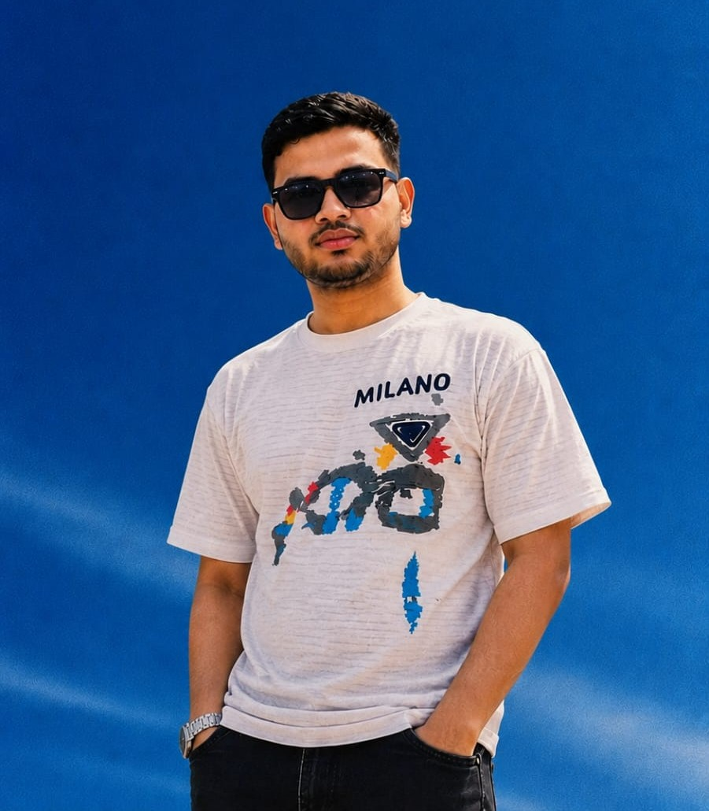

Research Assistant, Southeast University · Dhaka, Bangladesh
trahman221182 [at] bscse [dot] uiu [dot] ac [dot] bd
Hi! My name is Tarek Rahman. I am currently in the final trimester of my Bachelor of Science (B.Sc.) degree in Computer Science and Engineering (CSE) at United International University (UIU), Bangladesh. I have a strong academic and research background and have contributed to UIU as a Grader. I am currently a Research Assistant at Southeast University and ELITE Research Lab, where my research focuses on AI-Powered Contradiction and Conflict Detection in Computer Vision. I also work on building and developing dataset pipelines to support future research in AI and computer vision. My academic experience enables me to bridge theoretical research with practical implementation. I have published multiple peer-reviewed papers in international workshops, journals, and conferences.
⚽ When I am not immersed in code, datasets, or late-night paper submissions, I am
likely cheering for my favorite Esports team. As a die-hard fan of 4Thrives
, I follow every match with the same passion I bring to my
research — Jio Mere Sher!

- ⚽Esports
- 🥋PUBG Mobile
- 🎾4T
- Research focus Computer Vision · Dataset Building · Human-Computer Interaction · Multimodal Learning
- Education B.Sc. in Computer Science and Engineering, United International University
- Published at Springer NatureScintific DataElsevier ArrayICCITIEEENeurIPSScintific Reports
- Academic service Reviewer — MICCAI 2026, ICECER, Springer Nature journals, Archives of Applied Sciences
- 2Peer-reviewed papers
- 1Journal articles
- 1Conference & workshop
- 12Reviewing services
News
- 🔎 Sep 2026 Invited to serve as a Reviewer for the GlobalSouthAI Workshop @ NeurIPS 2026.
- 📄 Aug 2026Paper accepted in Scintific Data Springer Nature: Multiclass Dataset for Real-Time Detection of Fresh and Defective Vegetables Using Deep Learnin.
- 🧠 Aug 2026 Joined as a Research Intern at the Center for Artificial Intelligence and Robotics (CAIR) Lab, Southeast University, focusing on Artificial Intelligence, Computer Vision, and Deep Learning research.
- 🔎 Aug 2026Invited to serve as a Reviewer for International Conference on Electrical and Computer Engineering Researches (ICECER 2026) — August Cycle.
- 🧠 Aug 2026 Recruited Research Intern at the Center for Artificial Intelligence and Robotics (CAIR) Lab, Southeast University, to contribute to research in Artificial Intelligence, Computer Vision, and Deep Learning.
Research Interests
-
Computer Vision
Visual recognition, object detection, image understanding, and real-world computer vision datasets for intelligent systems.
-
Vision–Language Models
Multimodal reasoning, visual grounding, vision–language alignment, and evaluation of VLMs in real-world and domain-specific settings.
-
Large Language Models
LLM evaluation, reasoning, generative AI, and the study of language models for information retrieval, decision-making, and real-world applications.
-
Multimodal Learning
Multimodal representation learning, cross-modal reasoning, multimodal datasets, and integrating visual and textual information.
Experience full CV →
-
Research Assistant
Southeast University — Center for Artificial Intelligence
and Robotics (CAIR)
March 2026 – Present
Conducting research in Computer Vision, Natural Language Processing, Multimodal AI, and Deep Learning, with a focus on real-world dataset development, model training, evaluation, and experimental analysis.
Collaborating with faculty and researchers on multidisciplinary AI projects while mentoring students in research methodology, dataset annotation, model development, and scientific writing. -
Research Assistant
Elite Research Lab, New York, USA
May 2026 – Present
Conducting research on multimodal computer vision, UAV imagery, and deep learning for robust agricultural image segmentation and backbone evaluation. Also working on IchthyoNoma, investigating nomenclature and context sensitivity of zero-shot biological vision–language models for Bangladeshi freshwater fish recognition.
- Grader United International University Octobor 2022 – January 2024 Served as a Grader under Mr. Md. Romizul Islam, Lecturer, Department of Computer Science and Engineering. Responsible for evaluating assignments, assisting with grading-related tasks, maintaining assessment records, and providing timely feedback to students.
Academic Service
Reviewing, mentoring and teaching contributions.
-
Conferences
Reviewer (August 2026, May 2026) ·
MICCAI 2026 · IEEE @ICECER 2026 · -
Journals
Education and Information & Technologies · Archives of Applied Sciences ·
-
Mentoring
Research mentor for undergraduate students at Southeast University, providing guidance in research methodology, literature review, dataset preparation, model development, experimental evaluation, and scientific writing, with a focus on Computer Vision, Machine Learning, and Deep Learning.
Contact
Happy to talk about research, collaborations, or anything in the papers above. Email is the fastest way to reach me.
Send a message
Contact details
- Email trahman221182@bscse.uiu.ac.bd
- Secondary email tarekrahamn01@gmail.com
- Phone +880 17274 70233
- Location Dhaka, Bangladesh